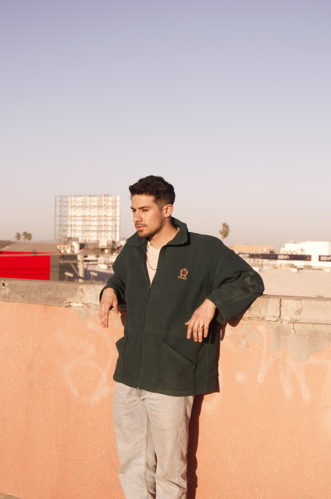

Jesus Iván Cañedo Arroyo
♦Estudiante de Diseño Gráfico con un gusto por el arte urbano, desde la ilustración, grafiti y música hasta lo que representa el arte urbano, fanatico del Diseño Web, la animación, la Ilustración y desarrollo de estas disciplinas
Agosto 2021 a Noviembre 2022
Creador de contenido para redes sociales de distintas empresas de la localidad, desarrollando post publicitarios para sus redes sociales, de igual manera actuando como community manager, al manejar el lenguaje adecuado para la empresa por medio de cada post
Desarrollo de identidades gráficas, publicidad para distintas empresas, elaboración de diseños para impresión de playeras